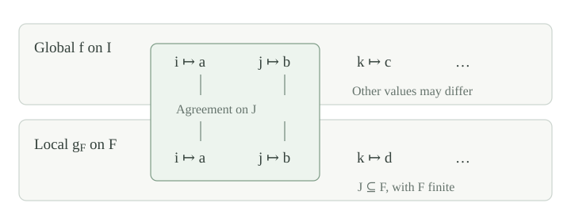

Let \(I\) be a set of indices, let \(X\) be a set of possible values, and let \(A_i\subseteq X\) be a nonempty finite set for every \(i\in I\). Write \([I]^{<\omega}\) for the set of finite subsets of \(I\). A local assignment on \(F\in[I]^{<\omega}\) is a function \(g_F:F\to X\) with \(g_F(i)\in A_i\) for every \(i\in F\).
Suppose one such assignment \(g_F\) has been supplied for each finite \(F\). They need not agree on overlapping domains. We seek a global assignment \(f:I\to X\) whose restriction to every finite set occurs in one of the supplied assignments on a larger domain. The larger domain may depend on the finite set.
We work with the axiom of choice. The argument will use ultrafilter extension and finite partition decisions. No order or other structure is imposed on \(I\), \(X\), or the sets \(A_i\).
For finite \(J\subseteq I\), put
These subsets of \([I]^{<\omega}\) have the finite intersection property, because
The union on the right is finite and belongs to its own cone. For no requirements, the intersection is the whole space \([I]^{<\omega}\), which contains \(\varnothing\). Thus the statement also holds when \(I=\varnothing\).
Let \((A_i)_{i\in I}\) be nonempty finite subsets of \(X\), and suppose a local assignment \(g_F\) is given on every finite \(F\subseteq I\). There is a function \(f:I\to X\), with \(f(i)\in A_i\), such that
Proof
By and ultrafilter extension, there is an ultrafilter \(\mathcal U\) on \([I]^{<\omega}\) containing every \(C_J\). Fix \(i\in I\). For each \(a\in A_i\), define
The finitely many sets \(D_{i,a}\) are pairwise disjoint and have union \(C_{\{i\}}\). Together with the complement of this cone, they partition the whole space. The complement is not in \(\mathcal U\), since the cone is in \(\mathcal U\). The finite partition rule therefore picks exactly one \(a\in A_i\) with \(D_{i,a}\in\mathcal U\). Define \(f(i)\) to be this unique value.
For finite \(J\), the set
belongs to \(\mathcal U\), hence is nonempty. Any \(F\) in it contains \(J\) and satisfies \(g_F(i)=f(i)\) for every \(i\in J\). The empty \(J\) is included: its intersection is \(C_\varnothing\), the whole nonempty space. □

The conclusion does not require \(f\) to extend every supplied \(g_F\). That would be impossible when supplied assignments disagree. It requires one suitable larger assignment for each finite test.
For each finite \(F\subseteq I\), let \(\mathcal S_F\) be a nonempty collection of local assignments on \(F\). Suppose that whenever \(F\subseteq G\) are finite and \(h\in\mathcal S_G\), the restriction \(h\mathbin{\upharpoonright}F\) belongs to \(\mathcal S_F\). Then there is a global assignment \(f\), with \(f(i)\in A_i\), whose restriction to every finite \(F\) belongs to \(\mathcal S_F\).
Proof
Use choice to pick \(g_F\in\mathcal S_F\) for each finite \(F\), and apply . For a fixed finite \(J\), the resulting \(f\mathbin{\upharpoonright}J\) equals \(g_F\mathbin{\upharpoonright}J\) for some finite \(F\supseteq J\). Restriction stability puts this map in \(\mathcal S_J\). □
The nonemptiness assumption says that every finite problem has a solution. Restriction stability says that discarding some indices cannot destroy a solution. Finiteness of each \(A_i\) is what lets the ultrafilter decide one value at that index.
For an indexed family \((A_i)_{i\in I}\) of subsets of \(X\), a system of distinct representatives is an injective function \(f:I\to X\) with \(f(i)\in A_i\) for every \(i\). The indexing matters: two equal sets at different indices still require different representatives.
When each \(A_i\) is finite, write \(A[J]=\bigcup_{i\in J}A_i\) for finite \(J\subseteq I\). The Hall condition is
It is necessary: an injective choice on \(J\) has \(|J|\) distinct values in \(A[J]\). The empty \(J\) gives \(0\ge0\); singleton tests require every \(A_i\) to be nonempty. If \(I=\varnothing\), the empty function is a system of distinct representatives.
For a finite index set \(I\) and finite sets \((A_i)_{i\in I}\), a system of distinct representatives exists exactly when \(|A[J]|\ge |J|\) for every \(J\subseteq I\).
Proof
Necessity was checked in . For sufficiency, induct on \(|I|\). The empty family has its empty choice map. Suppose \(I\ne\varnothing\) and Hall's condition holds.
First suppose there is a nonempty proper subset \(J\subsetneq I\) with \(|A[J]|=|J|\). The family on \(J\) satisfies Hall's condition, so induction gives distinct representatives there. For \(i\in I\setminus J\), put \(B_i=A_i\setminus A[J]\). If \(K\subseteq I\setminus J\), then
Hall's condition for \(J\cup K\), and \(|A[J]|=|J|\), give \(\bigl|\bigcup_{i\in K}B_i\bigr|\ge |K|\). Induction gives distinct representatives from the \(B_i\). They lie outside \(A[J]\), so combining the two choices gives an injective choice on \(I\).
Otherwise every nonempty proper \(J\subsetneq I\) satisfies \(|A[J]|\ge |J|+1\). Choose \(i_0\in I\) and \(a\in A_{i_0}\), possible by the singleton test. For \(i\ne i_0\), put \(B_i=A_i\setminus\{a\}\). Each nonempty \(K\subseteq I\setminus\{i_0\}\) is proper in \(I\), so \(|A[K]|\ge |K|+1\). Removing at most one value leaves \(\bigl|\bigcup_{i\in K}B_i\bigr|\ge |K|\); the empty test also holds. Induction supplies distinct representatives for these \(B_i\). Adding \(f(i_0)=a\) completes the choice without a collision. This argument also covers \(|I|=1\), when the remaining family is empty. □
Three indices have \(A_0=A_1=A_2=\{0,1\}\). Every singleton and every pair passes the Hall test. Does the family have distinct representatives? What changes if \(A_2\) is replaced by \(\{1,2\}\)?
The first family has only two available values for three indices, so the test for \(J=\{0,1,2\}\) fails. No injective choice exists. In the modified family, the choices \(f(0)=0\), \(f(1)=1\), and \(f(2)=2\) are distinct and belong to their respective sets. Hall's condition must inspect all finite subsets, not just subsets of a fixed small size.
Let \(I\) be any set and let every \(A_i\subseteq X\) be finite. There is a system of distinct representatives exactly when
Proof
Necessity is the same finite counting argument. Suppose the condition holds. Its singleton instances make each \(A_i\) nonempty. For each finite \(F\subseteq I\), all subsets of \(F\) satisfy the condition, so gives an injective local assignment \(g_F\). Use choice to select one for each \(F\), and apply to obtain \(f\).
If \(i\ne j\), apply the patching conclusion to \(J=\{i,j\}\). On this pair, \(f\) agrees with some injective \(g_F\), so \(f(i)\ne f(j)\). Thus \(f\) is injective and is the required system of distinct representatives. No countability assumption on \(I\) is needed. □
Let \(I=\mathbb N\), put \(A_0=\{1,2,3,\ldots\}\), and put \(A_n=\{n\}\) for \(n\ge1\). Does every finite subfamily have distinct representatives? Does the entire family?
Every finite subfamily has distinct representatives. Give each positive index \(n\) its forced value \(n\). If index \(0\) is present, give it a positive integer outside the finitely many positive indices present. In particular, every finite collection of indices has at least that many available values between them.
For the entire family, every positive integer \(n\) is already the forced representative of index \(n\). Any choice \(f(0)=m\in A_0\) collides with \(f(m)=m\). Hence no global injective choice exists. A single infinite available set is enough to defeat the finite-test criterion.